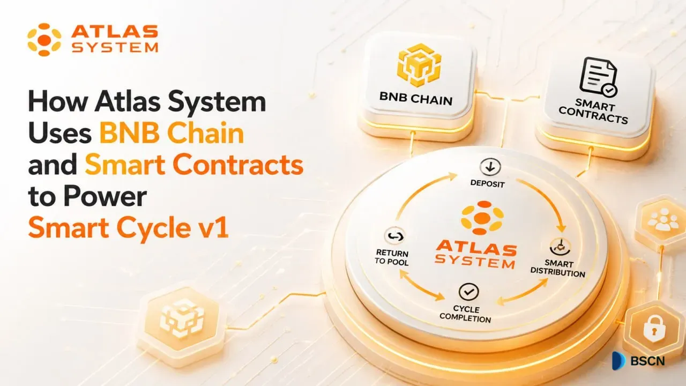
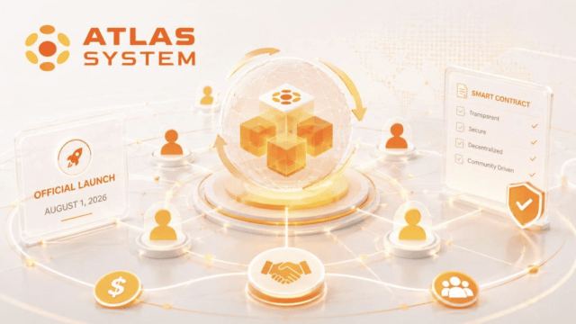

C1
Smart Cycle 1
Available at launch
The first pilot financial product and the core of the Atlas System ecosystem
Selected publications and press materials about Atlas System, its smart contracts, and the upcoming platform launch.

An overview of Smart Cycle v1 on BNB Chain, including Lockup Flow, Daily Flow, USDT routing, and the role of PancakeSwap V3.

A launch overview covering voluntary mutual financing, on-chain transparency, Smart Cycle 1, and the wider Atlas System roadmap.